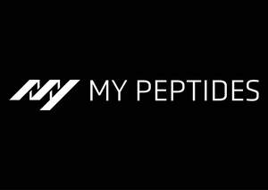

Trade Mark Journal No.2026/005 30 January 2026
UK00004315089 23 December 2025 (1,5,10,35,42)

- Class 1
- Chemical reagents for scientific or research use; Biochemical compounds for laboratory use.
- Class 5
- Dietary supplements; Nutritional supplements; Food supplements; Vitamin supplements; Mineral supplements; Amino acid supplements; NAD+ dietary supplements; NAD+ oral capsules; Peptide-based dietary supplements; Nutritional preparations containing peptides; Dietary supplements for general health and wellbeing; Medical preparations containing peptides; Pharmaceutical preparations containing NAD+; Pharmaceutical preparations for enhancing cellular health; Nutraceutical preparations; Nutraceuticals for use as dietary supplements; Dietary and nutritional preparations; Medicated supplements; Peptides for scientific purposes; Peptide preparations for laboratory research purposes; Research-grade NAD+ compounds.
- Class 10
- Autoinjector pens; Medical injection devices; Medical syringes; Medical apparatus and instruments for administering peptides; Medical devices for delivering nutritional or pharmaceutical preparations; Replacement cartridges for autoinjector pens.
- Class 35
- Retail services relating to dietary supplements; Online retail services relating to dietary supplements; Retail services in relation to peptides for scientific purposes; Online retail services in relation to peptides for scientific purposes; Retail services connected with medical devices; Online retail services connected with medical devices.
- Class 42
- Biotechnological research services; Scientific laboratory services related to peptides.
My Peptides Limited
Representative: The Trademark Helpline